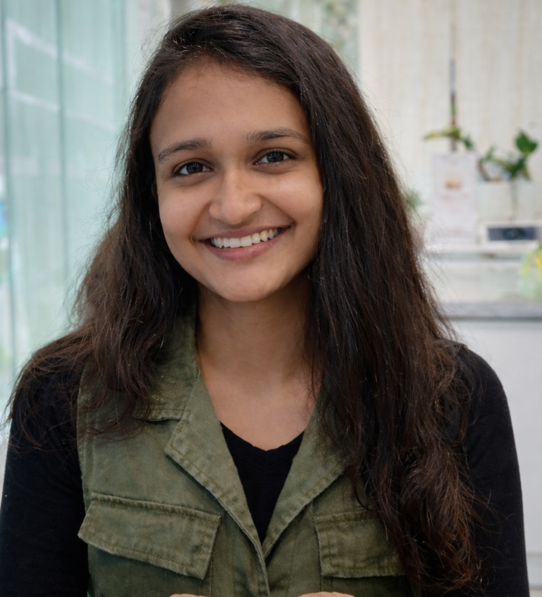

Terrain Mapping System
Built 2D terrain segmentation using U-Net and 3D point-cloud modeling with KPConv in PyTorch. Processed aerial imagery with OpenCV for autonomous navigation and defense intelligence applications.
AI/ML researcher, full-stack engineer, and generative systems builder.
Graduate researcher at USC Viterbi. I design transformer benchmarks, build scalable ML pipelines, and ship full-stack applications for research and real-world production.

Graduate researcher at USC Viterbi with a proven record of delivering generative AI systems, scalable backend services, and polished web experiences.
I specialize in large language models, generative AI, and neuromorphic computing while maintaining strong full-stack capabilities for product development. My work spans research experimentation through production-grade deployment, including RESTful APIs, MySQL, PHP, Java, and modern frontend design.
I am currently engaged in USC research that focuses on benchmarking and validating LLM architectures, building reproducible evaluation pipelines, and applying efficient model validation algorithms to real-world systems.
Hands-on research, machine learning, and full-stack delivery across academic labs, defense research, and live business applications.
Designed and executed quantitative PyTorch experiments benchmarking transformer-based LLM architectures, implemented NLP model validation pipelines, and produced reproducible data-driven findings for efficient AI systems research.
Built end-to-end JAX pipelines for multi-sensor video and image processing with OpenCV, applying regression, classification, and time-series analysis to improve model accuracy and reliability under real-world conditions.
Developed and evaluated a GAN-based recommendation system for 10,000+ users, built scalable Java data pipelines, and improved recommendation precision with iterative experimental validation.
Engineered a full-stack CRM using PHP, MySQL, and REST APIs, improving financial operations efficiency while delivering a responsive frontend with HTML, CSS, and Bootstrap.
Led a 6-member Agile team building 6+ live full-stack projects, shipping responsive websites and improving delivery workflow by 75% with Git-based version control.
Research prototypes and real-world systems that combine AI modeling, web development, and full-stack engineering.
Built 2D terrain segmentation using U-Net and 3D point-cloud modeling with KPConv in PyTorch. Processed aerial imagery with OpenCV for autonomous navigation and defense intelligence applications.
Designed and implemented RESTful APIs in PHP and JavaScript for a skill-based internship matching platform with real-time student–faculty collaboration via WebSockets.
Architected a spiking neural network achieving 94.3% detection accuracy with 85% lower GPU power and under 100ms response latency.
Delivered a full-stack website and digital platform for social impact initiatives. Managed development, design, and team collaboration.
Built a responsive college website with course catalogs, event updates, and online registration to improve student and visitor access.
Developed a customer-facing event management website and maintained key UI/UX updates for marketing and service delivery.
Created a customer relationship management system to handle customer details, revenue tracking, and operational workflows.
Designed a clean, responsive portfolio that highlights my projects, technical skillset, and career path for recruiters and collaborators.
A strong academic foundation in AI, machine learning, distributed systems, and engineering design.
Coursework includes Artificial Intelligence, Machine Learning, Deep Learning, and Distributed Systems.
GPA: 3.7 / 4.0. Coursework includes Advanced Data Structures & Algorithms, Network Security, Big Data Analytics, OS, and Databases.
Research, patents, and recognition earned for innovation in AI, neuromorphic systems, and practical ML solutions.
Delivered 95% efficiency and 99% rescue rate; earned 1st Prize at an international engineering conference.
Combined GAN recommendations, 3D AR visualization, and multilingual support to create a product-focused recommendation pipeline.
Accepted for publication; an academic treatment of model evaluation and reproducible ML reporting.
Accepted for publication; focuses on real-time edge AI for educational diagnostics.
Accepted publication on ensemble methods, SMOTE, and SHAP explainability for fraud detection.
Accepted publication on continual learning for AI wearables with confidence-aware decision making.
Ready to collaborate on AI research, web systems, or product-focused engineering work.
I’m available for research internships, engineering roles, and freelance web development. Let’s connect and build the next product or AI prototype.